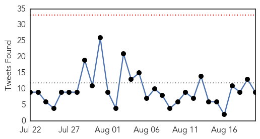
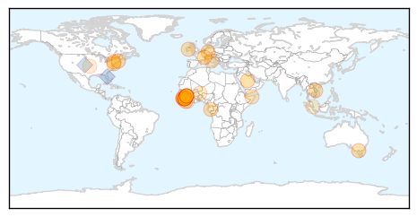
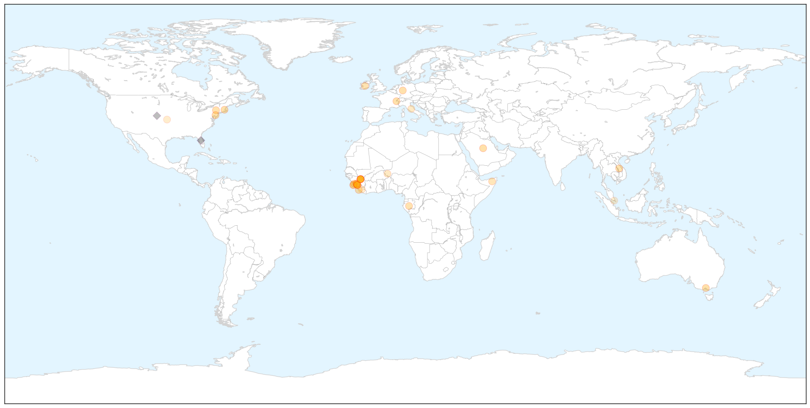
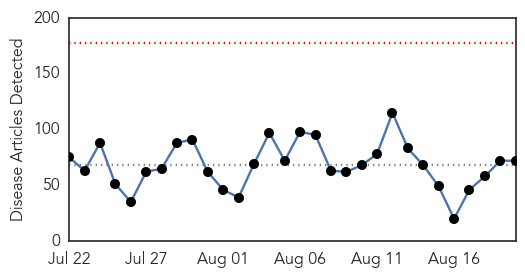
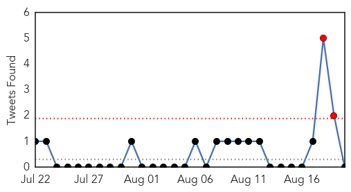
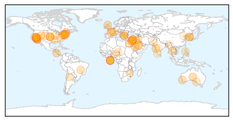
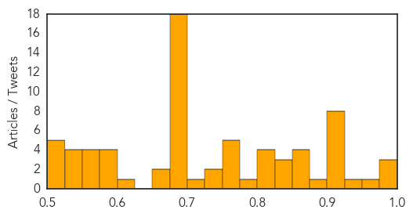

Ebola
30-Day Web Trend
1 alerts, 0 warnings

30-Day Twitter Trend
0 alerts, 0 warnings

Article Locations

X

Article Confidences

Top Articles:
- 1.000
- Ebola Outbreak: Sierra Leone Finally Ebola-Free : News : Headlines & Global News
- 1.000
- WHO reports 3 new Ebola cases—all in Guinea
- 1.000
- Explaining Emerging Infectious Diseases
- 0.999
- South Jersey malaria case triggers Ebola precautions
- 0.999
- Ebola virus outbreak: What does the Bible Say?
- 0.999
- UN: Fight against Ebola to cost $600 million
- 0.997
- Comment: The possible effect of 'leaky vaccines'
- 0.996
- Ebola's lessons: How WHO mishandled the crisis
- 0.994
- Ebola Situation Report
- 0.987
- Ebola in Sierra Leone: after 4,000 deaths, outbreak all but over
- 0.984
- Sierra Leone Awaits Countdown to Ebola-Free Existance
- 0.980
- Prepared for next global epidemic? The public doesn’t think so
- 0.972
- U.S. Based Center for Disease Control Lauds National Port Authority On Ebola Fight
- 0.959
- NYC names hotel as source of deadly Legionnaires' outbreak
- 0.939
- Health Ministry 2015 Mid-Year Review Towards Building a Resilient Health System Countrywide
- 0.930
- Guinea gives masterclass in how to bounce back from Ebola. Starting a business takes just 72 hours; this year expect 4,000 new ones
- 0.927
- Tackle Nepal’s typhoid problem now
- 0.922
- Politico SL News Malnutrition: Another health problem in Sierra Leone
- 0.869
- Anne Curtis donates Twitter account to Ebola survivor
- 0.853
- Protecting The Most Vulnerable in Sierra Leone's Latest Ebola Outbreak
- 0.848
- Politico SL News NERC warns against underreporting of deaths
- 0.836
- Doctors Rule Out Ebola For New York Patient
- 0.827
- UN and Africa: focus on Ebola, Libya and Somali economy
- 0.784
- Anne Curtis 'donates' her Twitter account to Ebola survivor
- 0.716
- Politico SL News Sierra Leone’s emergency rule gets political
- 0.701
- West and Central Africa Region Weekly Humanitarian Snapshot 11-17 August 2015 - Nigeria
- 0.701
- Ministry of Health and Sanitation – Sierra Leone
- 0.684
- Researchers' Work from Novartis Animal Health Focuses on Vaccines (Delivering vaccines to the people who need them most)
- 0.623
- Politico SL News New plan for Sierra Leone’s health sector
- 0.585
- FG to harmonise strategies for universal health coverage
- 0.528
- Leader in Hotel, Airlines, Tourism and Travel Trade News
Top Tweets:
- 0.912
- Ebola in Sierra Leone: after 4000 deaths outbreak all but over - The Guardian http://t.co/vPq7JEdEXi ebola EVD
- 0.912
- Ebola in Sierra Leone: after 4000 deaths outbreak all but over - The Guardian http://t.co/qE4bHZGIBj ebola EVD
- 0.912
- Ebola in Sierra Leone: after 4000 deaths outbreak all but over - The Guardian http://t.co/DmViLV2v0q ebola EVD
- 0.903
- RT: Huge loss for by the way; @HelenBranswell made them an indispensable news source on flu MERS Ebola and ev…
- 0.782
- Ebola in Sierra Leone: 'We may have seen the last of the cases' - The Guardian http://t.co/Q0Eyv12F29 ebola EVD
- 0.780
- WHO Ebola report 27988 cases 11299 deaths 880 health care workers infected 512 health care workers dead http://t.co/0uBz5evdHk
- 0.715
- Ebola's lessons: How WHO mishandled the crisis - Devex http://t.co/I0IhwXZ3Jq ebola EVD
- 0.686
- Bringing Resiliency and Normalcy to Ebola-Free Liberia - Huffington Post http://t.co/CHuxs87huD ebola EVD
- 0.596
- Ebola in Sierra Leone: after 4000 deaths outbreak all but over - The Guardian http://t.co/d6pgnKXF1S
Unknown
30-Day Web Trend
0 alerts, 0 warnings

30-Day Twitter Trend
2 alerts, 0 warnings

Article Locations

Article Confidences
Top Articles:
- 0.995
- What lessons S.Korea learn from MERS outbreak
- 0.979
- Warning from health service
- 0.976
- KBS World Radio
- 0.967
- Saudi Arabia closes emergency ward as MERS infections soar before Hajj
- 0.937
- Flu miracle for WA patients
- 0.923
- Inverness parents urged to protect kids by handing in flu forms
- 0.917
- Chicago Tribune
- 0.917
- Chicago Tribune
- 0.917
- Chicago Tribune
- 0.917
- Chicago Tribune
- 0.917
- Chicago Tribune
- 0.917
- Chicago Tribune
- 0.902
- Health Officials Investigate Second Case Of Plague In California
- 0.887
- Plague Spreading Fast in the US
- 0.873
- NYC Legionnaires' disease death toll rises
- 0.866
- Brazil's lower house speaker Cunha charged in corruption probe
- 0.858
- Officials investigate case of plague in Georgia
- 0.856
- Lyme disease: Federal MP calls for greater recognition of tick-borne illness affecting 'thousands'
- 0.850
- Contrary to BMC’s claims, lab reports hantavirus cases in Mumbai
- 0.843
- Pasadena Hospital Tied To Another Outbreak From Tainted Scopes « CBS Los Angeles
- 0.831
- News Scan for Aug 19, 2015
- 0.823
- Residence had several confirmed cases of hot tub lung
- 0.817
- New study: San Francisco Bay Area Ticks Carry Diverse Infections
- 0.805
- Bland Houses Had Legionnaire’s Outbreak
- 0.801
- Officials investigate case of plague in Georgia
- 0.788
- IDNR Biologists Asking for Help in Tracking Fatal Deer Disease Outdoor News Daily
- 0.774
- Two tourists may have contracted the plague at Yosemite National Park
- 0.772
- Second Case of Human Plague Confirmed in Yosemite
- 0.769
- Patients in LA-area Hospital Detected with ‘Superbug’
- 0.764
- Health officials investigating second case of human plague in California
- 0.756
- Another Yosemite Visitor May Have Plague
- 0.735
- Duck! Researchers show vomiting can send viruses airborne
- 0.734
- California hospital investigates scope-related superbug infection outbreak
- 0.720
- Winter illnesses cause hospital gridlock, ramping
- 0.697
- Foot and mouth disease under control: Zhanda
- 0.694
- Georgia tourist is second suspected case of the plague in a month at Yosemite
- 0.690
- The Caledonian-Record
- 0.689
- Cryptosporidiosis reported in Johnson County
- 0.687
- France and Britain to sign Calais security agreement
- 0.686
- Whirling disease threatens mountain trout fisheries
- 0.683
- Georgia tourist with possible case of plague expected to recover
- 0.681
- Opera House Hotel confirmed as source of Legionnaires' disease outbreak, NYC health commissioner says
- 0.679
- South Korea declares end to MERS outbreak
- 0.679
- FOX5 San Diego – San Diego news, weather, traffic, sports from KSWB
- 0.677
- Pope Francis photographed with sign urging Falklands dialogue
- 0.677
- Palestinian ends hunger strike after court 'suspends' detention
- 0.677
- North and South Korea ‘exchange fire at border’
- 0.677
- Macedonia declares state of emergency over refugee crisis
- 0.677
- Israel strikes Syria after rocket attack on northern village
- 0.677
- France and UK sign Calais cooperation agreement
Showing top 50 articles...
Top Tweets:
-
No tweets found for Aug 20, 2015